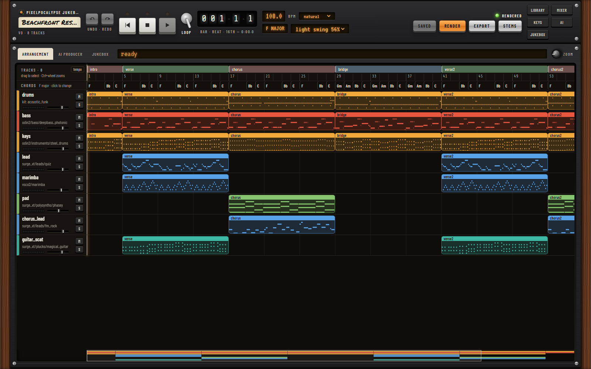
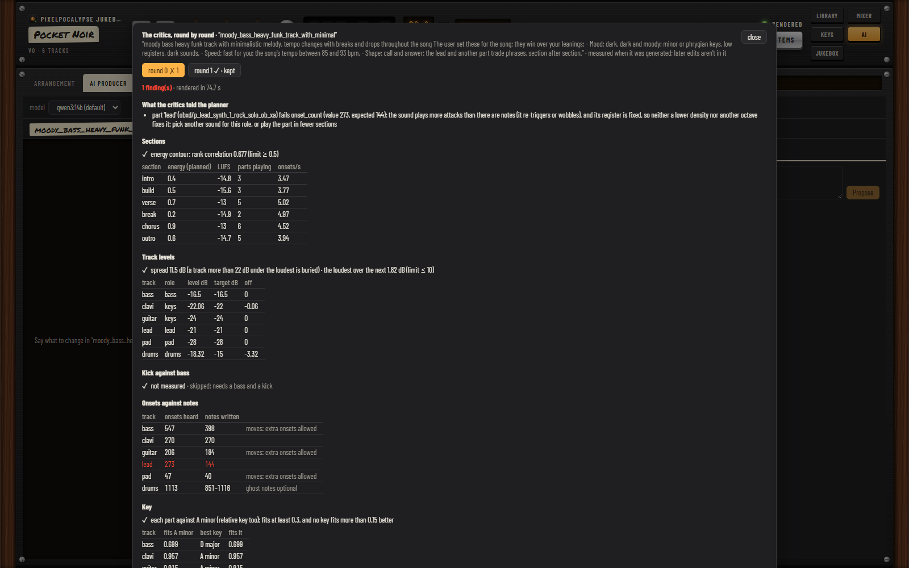
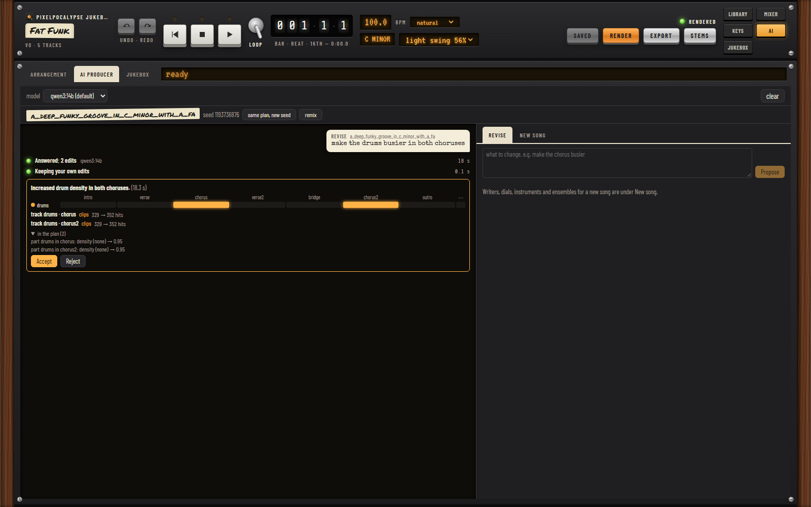
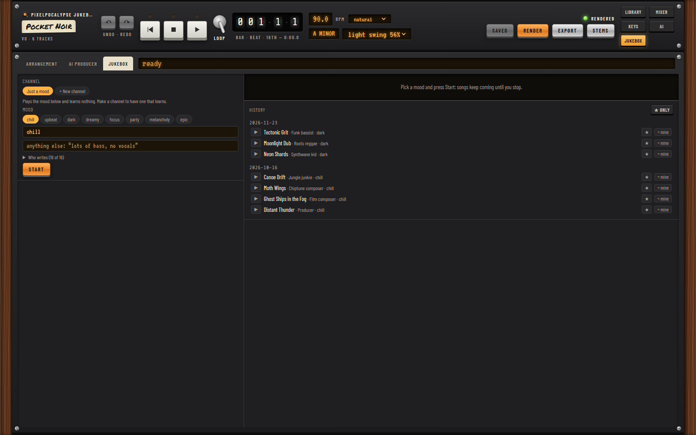
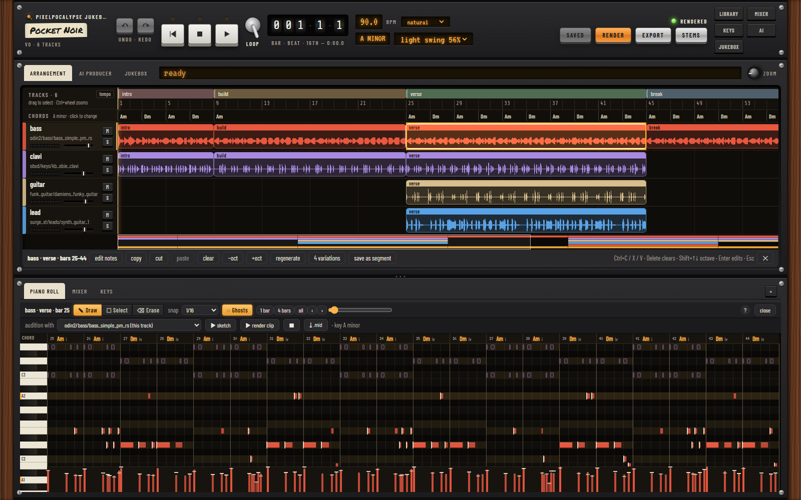
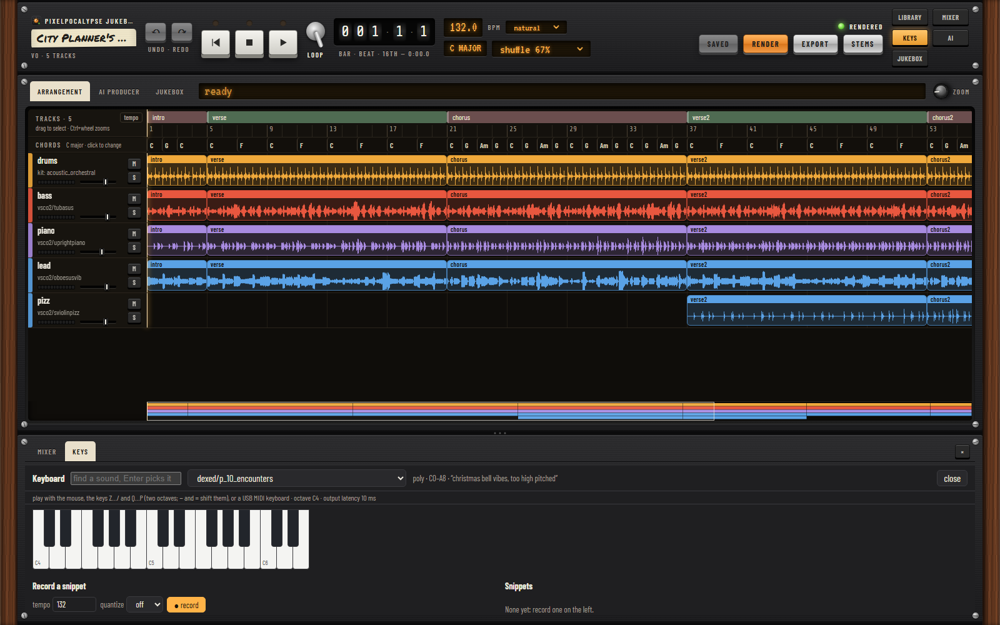
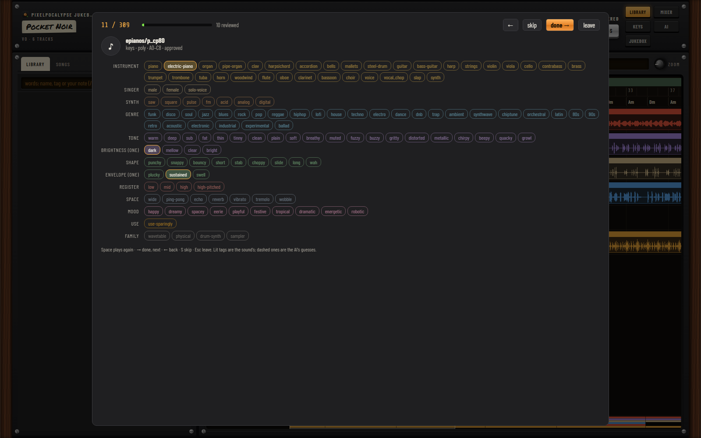

The window
The app runs in your browser at http://127.0.0.1:8000, served by your own machine. The top is
the transport: the song's name on its tape label, undo and redo, play, stop and loop, the position
counter, the tempo, the key and the swing. On the right: Saved, Render, Export and
Stems, and the buttons that open the Library, Mixer, Keys, AI and
Jukebox.
Under it, the main window has three tabs that take turns: the Arrangement, the AI producer and the Jukebox. A dock at the bottom holds the piano roll or drum grid, the mixer and the keys; a dock on the left holds the library and your songs. The lamp over Render says whether what you hear is up to date.


A new song
AI producer · New song
Open the AI producer (the AI button, or its tab) and choose New song. Describe the song in your own words and press Generate (Ctrl+Enter). Name what matters to you: a genre, a mood, a tempo, instruments, how it should build. "a deep funky groove in C minor with a fat bass and chord stabs" is plenty.
Who writes it
Pick a writer, or leave it to the Producer, who has no style of its own and follows the request. The others each bring their own drums, chords and habits:
| Writer | What they do |
|---|---|
| Club DJ | four on the floor, long builds and drops, intros and outros you can mix |
| Roots reggae | one-drop drums, offbeat skank, deep round bass and lots of space |
| Blues player | the whole 12-bar form, seventh chords, a shuffle groove and a crying lead |
| Guitar hero | riffs up front, a big solo section, rock drums and a hard ending |
| Funk bassist | the bass leads: dorian vamps, chicken-scratch stabs, tight funk drums |
| Soul pocket | early-70s soul-funk: one chord, a clav riff, ghost-note drums and a talking vocal line |
| Jazz cat | ii-V-I changes, sevenths, mellow keys and a melody that breathes |
| Techno minimalist | hypnotic, dark, one chord for ten minutes and it never gets boring |
| Synthwave kid | 80s neon: arpeggios, big pads, a soaring lead and gated drums |
| Chiptune composer | 8-bit game music: fast arps, square leads, catchy and busy |
| Beatmaker | boom bap: a dusty 4-bar loop, a heavy kick and a mellow sample feel |
| Film composer | cinematic: slow swells, strings and choir, a build to a climax |
| Ambient dreamer | slow and spacious: layered pads, no melody to speak of, no hurry at all |
| Disco diva | octave basslines, strings, open hats and a chorus that lifts the roof |
| Jungle junkie | drum and bass at 170: rolling breaks, a huge sub and dark pads |
Dials, length, instruments
- Dials set the mood, the speed and the shape (a quiet middle, call and answer...). With no prompt, Generate makes a fresh idea from the dials alone.
- Minutes sets the length.
- Instruments: add a slot to pick the sound a role must use (the bass, the keys), or tick "only these" to limit the song to your picks.
- Quick draft skips the critics' rounds: a playable song in a minute or two, to see whether an idea is worth a full generate.
- Takes: ask for more than one and they're made in a batch. Choose the one to keep in the takes window.
Tags steer the sounds: a prompt saying "rhodes" or "fat gritty bass" finds the sounds tagged electric-piano, fat, gritty (see Library and tags).
The model picker at the top of the panel lists every model your LLM server offers. Bigger models plan better; a 12B+ instruct model that's good at JSON is the floor.
Watching it work
Each request shows its steps as they happen. First the plan card: tempo, key, sections, and which sound plays each part (your picks are marked). Then every track of round 0 rendering, then the critics' findings and what each fix changed. A three-minute song takes a few minutes: planning, rendering every part, then the critics and up to three fixes. When it says done, the new song is open, mastered, and ready to play.

The critics' rounds
AI producer · "the critics' rounds"
When Generate finishes, "see the measurements, round by round" (or "the critics' rounds" in the AI panel later) shows what the critics measured in each round:
- Sections: each section's loudness in LUFS against the energy the plan gave it, how many parts play, and how busy it is.
- Track levels: each track against its target, and the spread between them, so nothing is buried.
- Kick against bass: whether the two fight for the same low end.
- Onsets against notes: the attacks heard against the notes written, which catches sounds that re-trigger or smear.
- Key: how well each part fits the song's key.
Each round also lists what the revision changed in the plan, and each number what it was the round before. Quick drafts and songs not made by Generate have none.


Revising
AI producer · Revise
With a song open, choose Revise, say what to change, and press Propose (Enter): "make the chorus bigger", "sparser drums in the intro", "a darker pad in the bridge". The revision's steps show as they happen, and it ends in a diff: a map of the tracks and sections it touches, and each change listed. Accept it or reject it.
Accepting makes a new version; Render then plays it, and only the parts that changed are rendered again. Undo takes it back.
From anywhere, Ctrl+K opens the command palette: type a request and "Ask the AI" sends it to the panel.


Seeds
A song's plan has a seed, shown in the AI panel, and the seed decides its notes. Set one under Generate to get the same notes again, or press same plan, new seed for new notes with the same sounds, levels and sections.
A seed reproduces the notes, not always the exact audio: patches with free-running LFOs, noise or a random oscillator phase render a little differently each time. "Same plan, new seed" gives the feel the new seed too.
Remix, segments, ensembles
Remix
"Remix…" in a song's details (Songs panel), or "remix" next to the song's name in the AI panel, makes a new song from it, with an optional prompt ("make it a dub version"). The original isn't touched.
Build a song around a section
Select a range over several tracks and press build a song around this. The new song keeps it note for note (or uses it as a guide) and writes the rest.
Segments and snippets
Select a range of one track and save as segment (Ctrl+Shift+S). Under Generate, "build on" takes several segments and snippets, one part each, moved into the new song's key and following its chords.
Ensembles
When a song's sounds sit well together, save as ensemble (the mixer's header, or a song's details) keeps each track's sound, role, pan, effects and level. Pick it under "ensemble" in the AI panel, and the next song is played by that band.
The jukebox
Jukebox tab
Pick a mood (chill, upbeat, dark, dreamy, focus, party, melancholy, epic, or type your own), add anything else in a line ("lots of bass, no vocals"), and press Start. The jukebox keeps writing and playing new songs until you stop it: each with a writer picked at random (you can narrow the list under "Who writes"), a length of three to five minutes, and its own idea, so the music changes from song to song and from day to day.
The first song takes a few minutes. After that the next one is always being made while the current one plays.
- Just a mood plays the mood and learns nothing.
- A channel you name learns: songs you star in it shape the songs it makes next.
- History lists every song it played, by day, with its writer and mood. ▶ plays one again, ★ stars it, and + mine copies it into your songs, ready to edit.


Timeline
Arrangement tab
- Click a lane to select that track's section (empty ones offer "+ add notes"), a section name to select it on every track, a track name for the whole track, or drag across bars and tracks.
- The bar that appears copies, cuts, pastes, clears, moves an octave, duplicates or removes the selection. Ctrl+C / X / V, Delete clears, Shift+↑/↓ moves an octave, Enter edits the notes.
- Regenerate (one track of a song made by Generate) writes new notes for the selected bars. 4 variations lets you hear four in the mix and use one.
- Zoom with the knob or Ctrl+wheel. The minimap at the bottom is the whole song.
- The tempo button opens the tempo lane: jumps, holds and ramps, so a song can speed up into a chorus or slow down at the end.
Render plays your edits; only the parts you changed are rendered again. ↶ undoes any change.
Chords
On a song made by Generate, the lane under the ruler shows each bar's chord. Click one to change it: pick one of the key's chords, or type one ("Bb7", "F#m7b5", "iv7"). It's saved to the song's plan, and the parts follow it in that bar. Bars you edited by hand stay as they are and are marked ≠.

Piano roll
Click a clip
- Draw adds notes with a click, Select drags a box, Erase removes. Arrows move the selection; Ctrl+C / V / D copy, paste and duplicate.
- Snap sets the grid. Ghosts shows the other tracks' notes faintly behind this one's.
- The chord of every bar sits above the notes, with its degree in the key.
- Audition with picks the sound you hear while editing: the track's own, or any other. sketch plays the clip at once with that sound; render clip renders it properly.
- ↓ .mid downloads the clip as a MIDI file.


Drum grid
Click a drums clip
Every piece of the kit has a row. Click a step for a hit, again for an accent, again for a ghost note, again for off; Shift-click places an accent and Alt-click a ghost. Each hit shows its played level as a thin meter.
+ add sample adds a row of your own, and dropping a WAV on a row replaces that piece. sketch plays the pattern; ↓ .mid downloads it. Change the whole kit from the mixer.

Groove, feel, dynamics
Next to the key in the transport: the groove is the swing (light swing, shuffle...). The feel plays the parts as a player would: the snare a few milliseconds late, loose hats, a laid-back bass, a little variation in every note's velocity. New songs get "natural"; "no feel" plays the notes exactly as written.
Neither moves a written note. The piano roll marks the notes the playback moves (a dashed edge, and a tick where it plays), and the same seed always gives the same feel.
Dynamics are written into new songs' notes, so you can see and edit them in the velocity lane: accents that change from bar to bar, swells over each phrase, a build through each section, crescendos into bigger sections, and drum fills that rise. Shift-drag in the velocity lane draws a ramp across the notes: a crescendo or a fade.
Keys and snippets
Keys
Play any sound in the library from the computer keyboard (Z…/ and Q…P, two octaves; - and = shift them), the mouse, or a USB MIDI keyboard. Type in "find a sound" and Enter picks it.
Record a snippet at a tempo, with or without quantize. Snippets can be edited, and Generate's "build on" uses them as parts of a new song.


Mixer and master
Mixer
A strip per track: its sound (or kit), insert effects, a gate, pan, level, mute, solo and a meter. Click the sound to swap it: the picker lists the sounds for that role, and ▶ plays this track's own notes with each one, so you hear it in context. Randomize (in Ctrl+K) gives every track, or the selected ones, a new sound.
Master (the mixer, or the command palette) balances the tracks and brings the song to -14 LUFS through a true-peak limiter. New songs and imports are mastered before you first hear them. The master strip shows the loudness, peak and limiting, with a loudness-matched Bypass.

Library and tags
Library
Every sound by role, tag, status and plugin, each with a ▶ to hear it. Type words to search names, tags and your notes. Star favourites, and swap a sound into a track from its details.
Every sound carries tags from one vocabulary (instrument, genre, tone, shape, register, mood...), and Generate picks sounds by them. Each row shows its tags; the tooltip says where one came from (your note, measured, the preset's name, an AI guess). Click a tag to filter by it, × to remove it, "+ tag" to add one (any alias works: "christmas" adds festive), or tick several rows and tag them together.
Review tags goes through the listed sounds one at a time: each plays as it comes up, every tag is a toggle, and → marks it reviewed and moves on (Space plays again, ← back, S skip, Esc leave). Your edits go into the shared tags file, so they become everyone's defaults if you contribute them.



Songs and versions
The song's name, or Songs in the left dock
Your songs, newest first or by when you last worked on them. Search covers titles, prompts, sounds, tags and notes. Each shows its writer, tempo, key and length; ▶ plays it from the list, ☆ stars it, and ⋯ opens its details (rename, tags, a note, save as ensemble, remix, duplicate, delete). Deleted songs wait in the trash and can be restored. Import MIDI starts a song from a MIDI file.
Every save is a version (v0, v1...), and an edit makes a new one. Undo and redo go through them. Each song keeps a history of what made each version: your edit, an AI revision and what you asked, undo, a sound swap.

Export and stems
Export writes the mix as WAV and MP3, the song as a MIDI file (one track per part, section markers, swing and
feel baked in), its credits and its history into a folder named after the song and its version:
~/Music/Super Music Sound/<Title> v<N>/ (set SMS_EXPORTS to move it).
- Every file carries the same name, and an edit makes a new version, so a new export never overwrites the last one.
- The credits list every plugin and sample library the song used, with its license and author.
- The history (
-HISTORY.txt) has the prompt the song was generated from, then every version with what made it and what it changed.
Stems writes a zip with a WAV per track (48 kHz, 24-bit, as the mix hears it, all lined up at 0) and the MIDI file into the same folder. The message that confirms either has an "open folder" button.
Shortcuts
| Keys | Does |
|---|---|
| Space | Play or pause |
| Home | Back to the start |
| L | Loop on or off |
| M / S | Mute or solo the selected track |
| Ctrl+Z / Ctrl+Y | Undo, redo |
| Ctrl+K | The command palette: render, master, randomize sounds, or ask the AI |
| Ctrl+Enter | Generate (AI producer, New song) |
| Enter | Propose a revision; in the timeline, edit the selected notes |
| Ctrl+C / X / V / D | Copy, cut, paste, duplicate |
| Delete | Clear the selection |
| Shift+↑ / ↓ | Move the selection an octave |
| Ctrl+Shift+S | Save the selection as a segment |
| Ctrl+wheel | Zoom the timeline |
| Esc | Close a popup, leave a selection |
With the Keys dock open, the letter keys play notes, so only Space, Home and Ctrl+K keep their jobs. In the Library, ? lists its own keys.